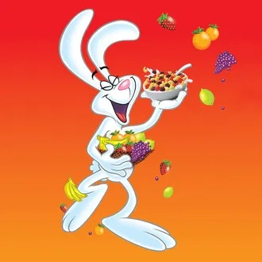
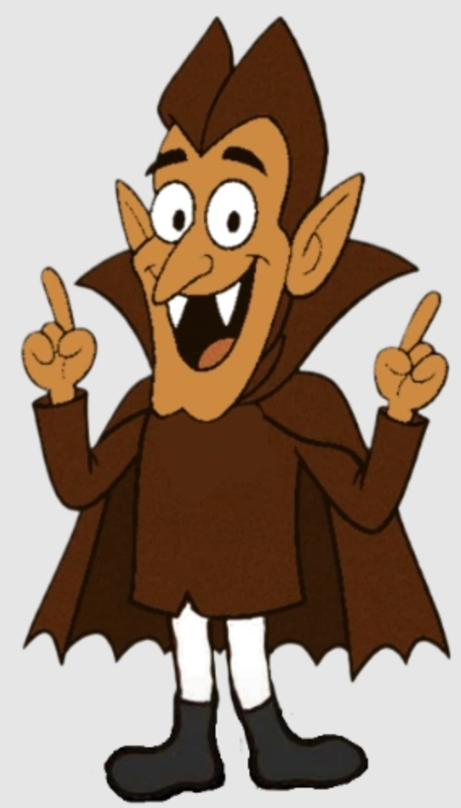
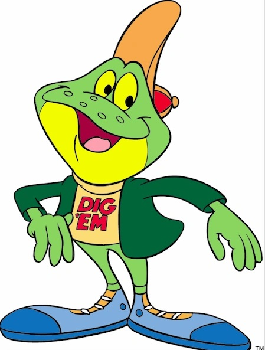
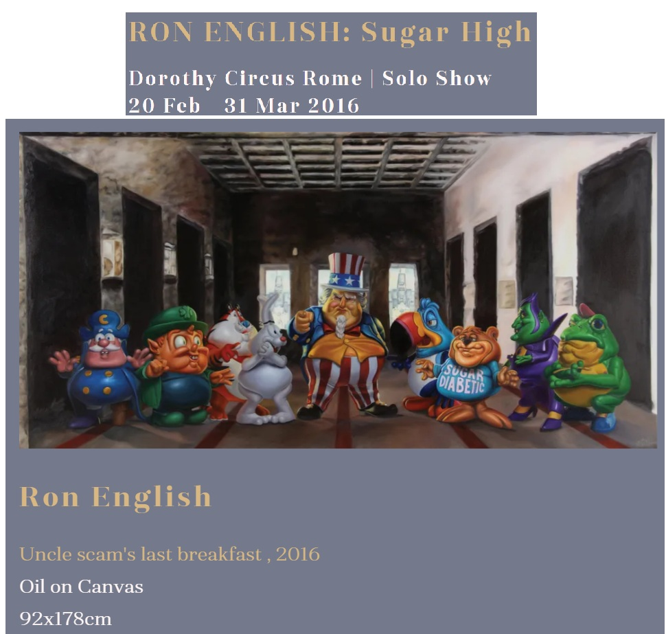

Exhibitions
Sugar High, Dorothy Circus Gallery, Rome, Italy, February 20–March 31, 2016.
English Translation Series, Pop Life Global Q Plex, Shenzhen, China, June 21–July 14, 2019.
Literature
Ron English, English Translation Series (Dongguan City, Guangdong, PRC: PopLife GLOBAL, n.d.), p. 34.
Ron English, Original Grin: The Art of Ron English (Paris: Cernunnos, 2019), p. 257. ISBN 978-2374950938.
Notes
The work is documented in the printed exhibition booklet English Translation Series.
In the exhibition booklet English Translation Series, this work was erroneously dated 2019.
The composition references James Montgomery Flagg’s I Want You for U.S. Army and incorporates breakfast-cereal mascot source material.
Ancillary Documentation
The following materials document the study/set, public-domain source image, cereal-character reference material, and exhibition documentation for the work.









Selected Online Circulation
Selected examples of the work’s online circulation, reproduction, or discussion. This list is not exhaustive; it is intended to document representative appearances of the image beyond formal exhibition and publication records.